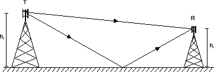
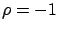
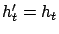
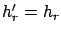
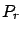
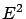

Siguiente: Aproximación
Subir: Propagación sobre una superficie
Anterior: Propagación sobre Tierra esférica
Índice General
Propagación sobre Tierra plana
Para distancias menores a unas pocas decenas de kilómetros, es
posible ignorar la curvatura de la Tierra y asumir que la superficie
es plana como muestra la figura 3.2.
Figura 3.2:
Propagación sobre Tierra plana
|

|
Si además se asume que , entonces la ecuación
(3.9) se convierte en:
De esta forma,
y utilizando la ecuación (3.8), con
 y
,
La potencia recibida  es proporcional a  entonces
En una forma logarítmica conveniente, la ecuación (3.10) puede
ser escrita como:
y en comparación con la ecuación (3.3) podemos
escribir la ``pérdida básica'' entre antenas isotrópicas como:
Subsecciones
Siguiente: Aproximación
Subir: Propagación sobre una superficie
Anterior: Propagación sobre Tierra esférica
Índice General
SAPO